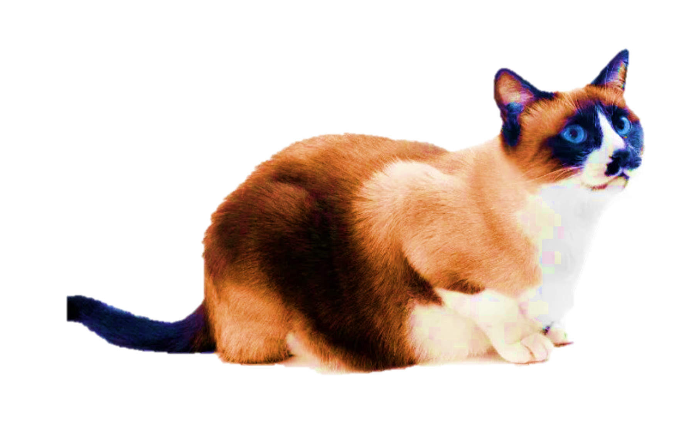

| Portraits |
Alias of four-legged friends |
Descriptors for thee |
 |
American Shorthair |
A mighty fine appearance, one that thy would think of everytime thy would have an impression of a cat. |
 |
British Shorthair |
Characterized by their large face and round physique, one that attracts humans for it appeals to all standards of what we'd call "cute-ness meter". |
 |
Bengal Cat |
Sleek and sophisticated in appearance, a sweet and spicy feline friend! (I mean this personality-wise before one may get the wrong idea of them being "sweet and spicy") |
|  |
Siamese Cat |
This one has actually owned a Siamese back in her day! Its multicolored coat and beautiful eyes are its biggest appealing factors, if that is what the seeker seeks. |